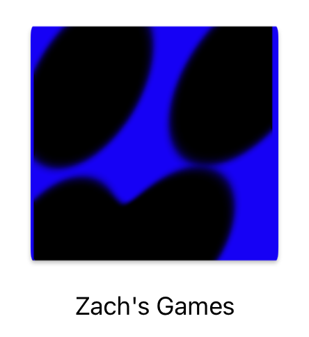
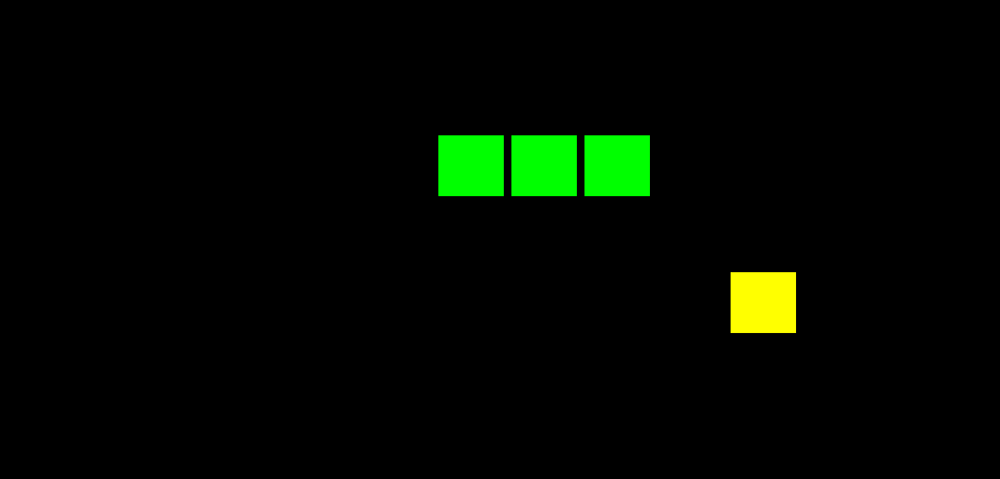
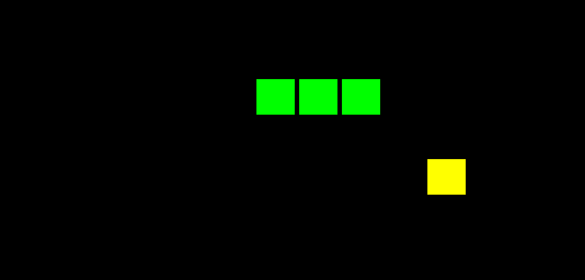
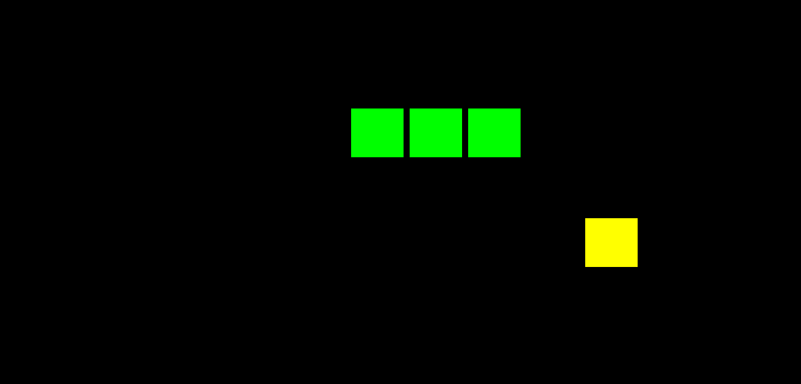

🐍 Snake Game 下载 / Download
欢迎来到 Snake Game 官网！Welcome to Snake Game official download page 🎮

 


游戏介绍 / About the Game
贪吃蛇是一款经典的小游戏，玩家需要控制蛇吃食物，同时避免碰到墙壁和自己。 / Snake Game is a classic game where you control the snake to eat food while avoiding walls and itself.
安装指南 / Installation
1️⃣ 下载完成后，解压 SnakeGame.zip 到你想放置的文件夹 / After download, unzip SnakeGame.zip to your desired folder.
2️⃣ 如果打不开应用（显示“损坏”或“无法打开”），请在终端执行：
cd ~/Downloads/SnakeGame
sudo chmod +x SnakeGame.app/Contents/MacOS/SnakeGame
sudo xattr -r -d com.apple.quarantine SnakeGame.app
3️⃣ 双击 SnakeGame.app 即可打开 / Then double-click SnakeGame.app to launch the game.
4️⃣ 使用系统检测工具 SnakeGameChecker.zip 检查 SFML 和依赖是否正确安装 / Use SnakeGameChecker.zip to check SFML and dependencies.